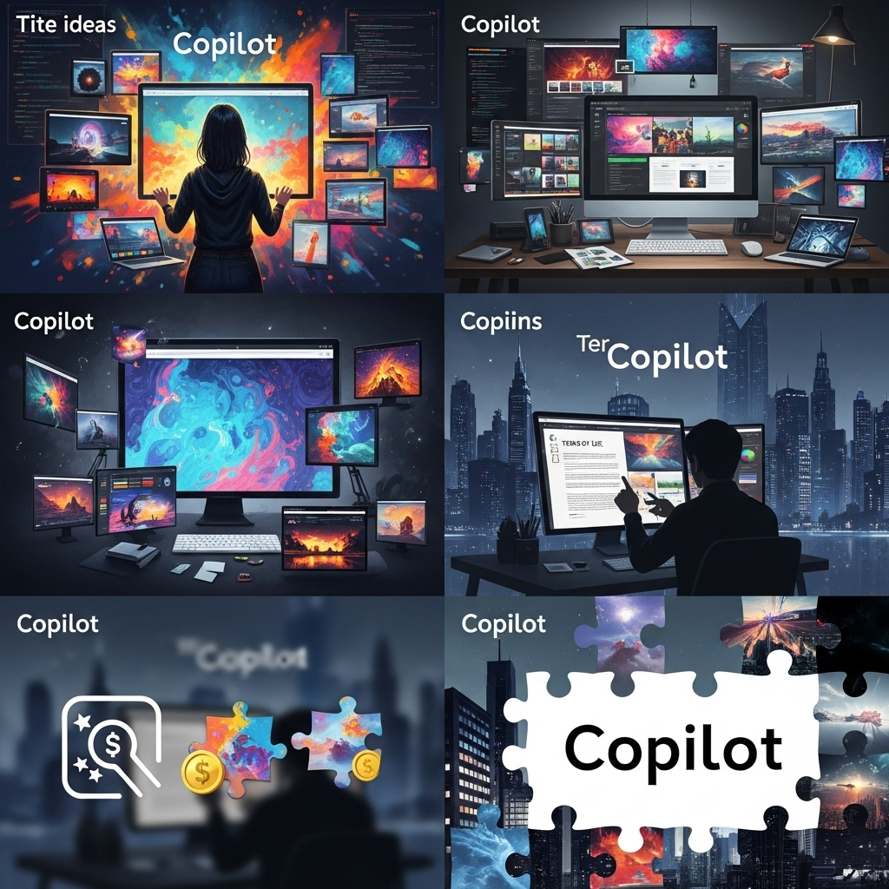
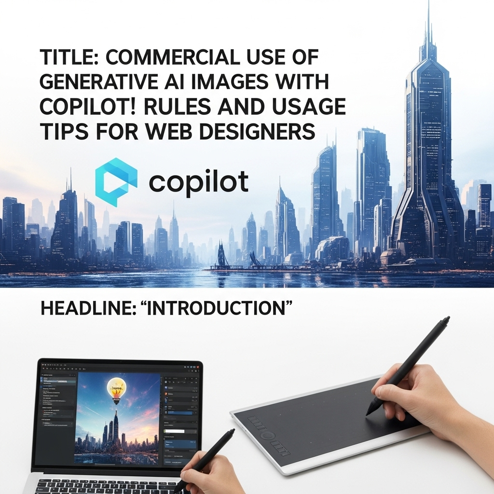
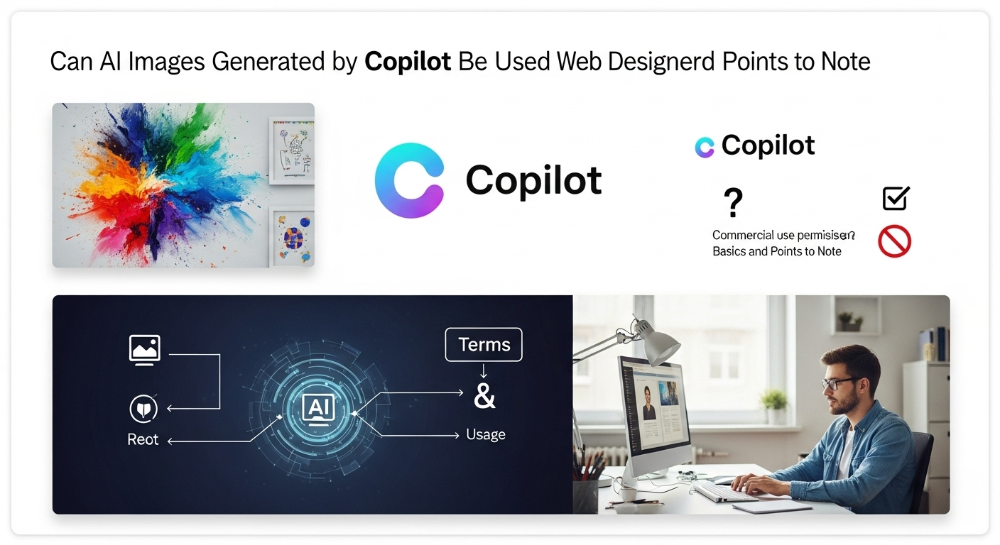
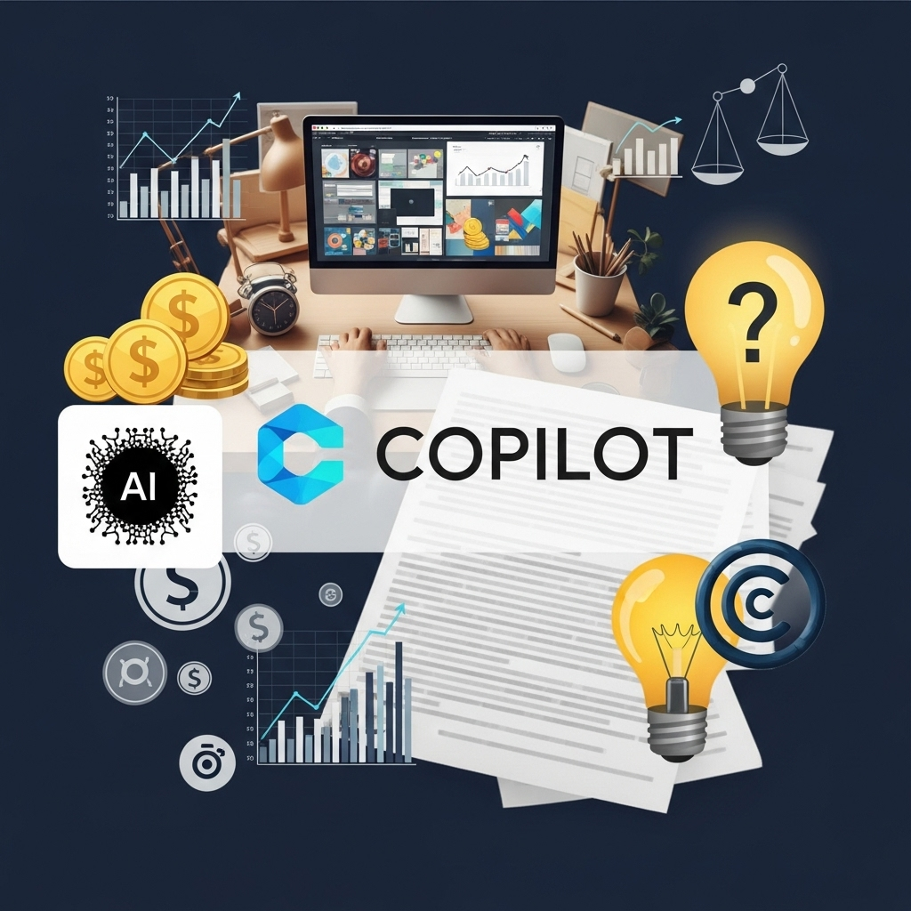
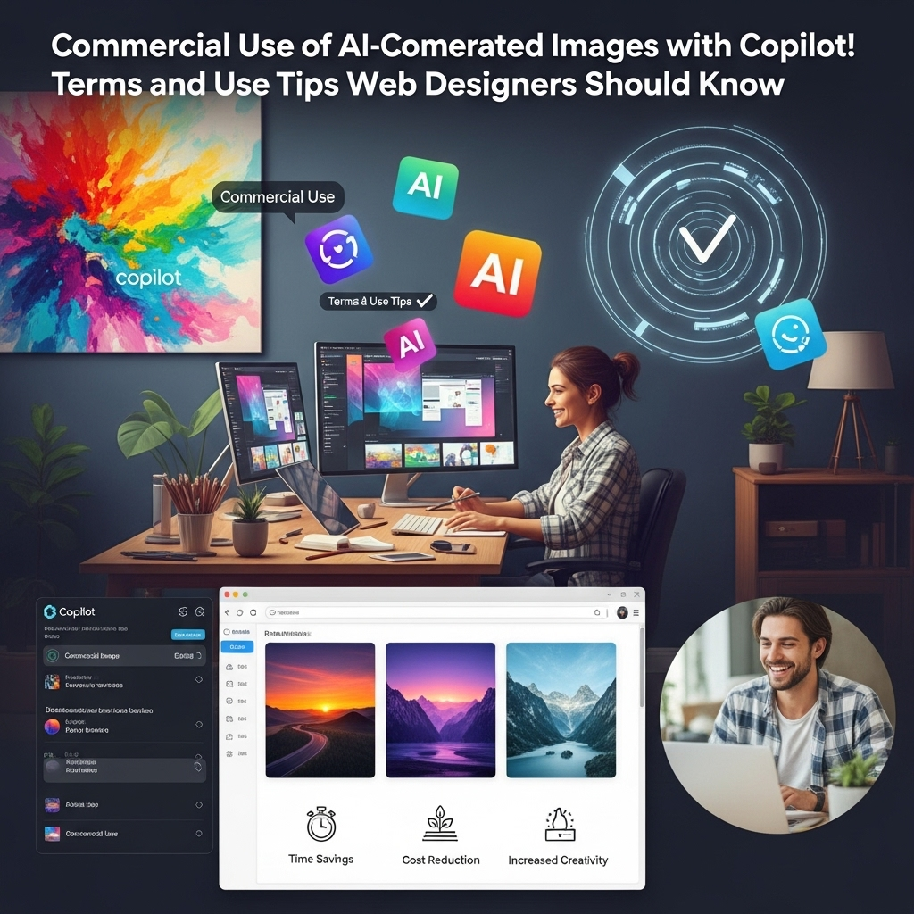
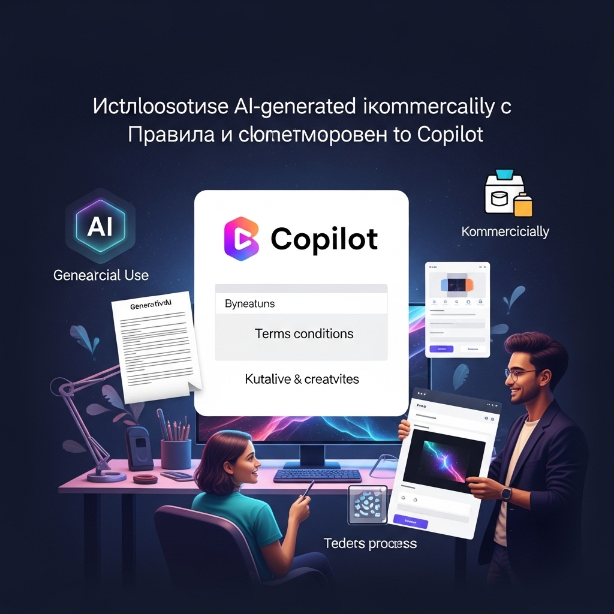
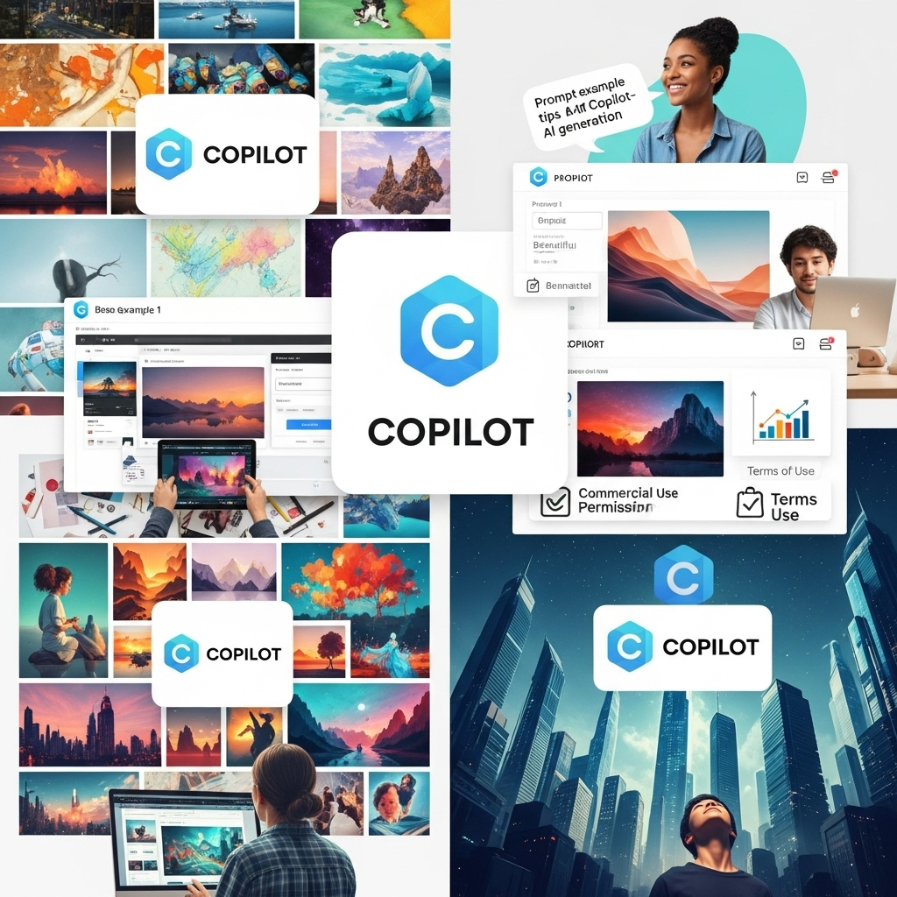
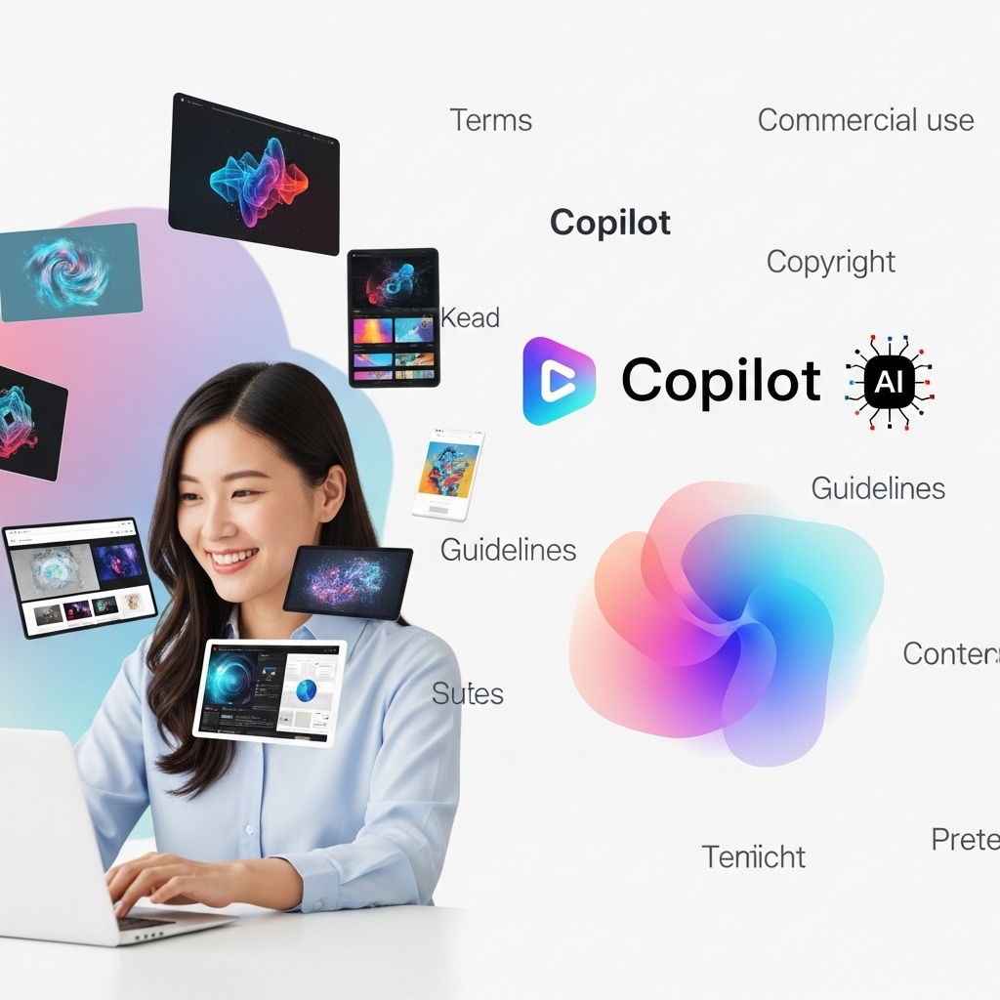

生成AI画像をCopilotで商用利用！Webデザイナーが知るべき規約と活用術

導入

デジタル時代の急速な進化は、私たちの働き方、そしてクリエイティブな表現のあり方を根底から変えつつあります。その最たるものが、近年目覚ましい発展を遂げている「生成AI」技術でしょう。特に画像生成AIは、テキストプロンプト（指示文）から瞬時に、驚くほど高品質な画像を創り出す能力を持ち、Webデザイン業界に新たな可能性と同時に、さまざまな問いを投げかけています。
Webデザイナーの皆様にとって、この技術は単なる流行り言葉ではなく、日々の業務に直結する強力なツールとなり得るものです。例えば、クライアントのWebサイトに合わせたユニークなアイキャッチ画像、訴求力の高いバナー広告、さらにはデザインコンセプトの視覚化など、その活用範囲は無限大に広がっています。しかし、その一方で、「AIが作った画像は本当に商用利用できるのか？」「著作権はどうなるのか？」「どんなリスクがあるのか？」といった疑問や不安を抱えている方も少なくないのではないでしょうか。
こうした状況の中、Microsoftが提供するAIアシスタント「Copilot」は、その手軽さと強力な画像生成機能を武器に、多くのWebデザイナーから注目を集めています。Copilotは、日常的な業務アシスタントとしてだけでなく、クリエイティブな制作活動においても、私たちの頼れるパートナーとなり得る可能性を秘めているのです。
本記事では、Webデザイナーの皆様がCopilotの生成AI画像を安心して商用利用できるよう、その利用規約の核心から、実際の活用術、そして注意すべきリスクまでを、徹底的に深掘りして解説していきます。私たちは、この新しい技術をただ傍観するのではなく、その本質を理解し、賢く、そして倫理的に使いこなすことで、Webデザインの未来を共に創造していくことができるはずです。落ち着いたトーンで、しかししっかりと、そして優しく親しみやすい雰囲気で、Copilotの生成AI画像を最大限に活用するための知識とヒントをお伝えしてまいります。さあ、AIと共創するWebデザインの新しい扉を開いていきましょう。
Copilotで生成したAI画像は商用利用できる？基本と注意点

Webデザイナーの皆様が生成AIの活用を検討される際、最も気になるのは「商用利用の可否」ではないでしょうか。特にMicrosoft Copilotのような大手企業が提供するサービスの場合、その信頼性や規約の明確さは非常に重要な判断基準となります。このセクションでは、Copilotで生成したAI画像の商用利用に関する基本的な考え方と、Webデザイナーとして知っておくべき注意点について、深く掘り下げて解説していきます。
１．結論：Microsoft Copilotの画像生成は商用利用可能
まず、最も重要な結論からお伝えします。Microsoft Copilotの画像生成機能（DALL-E 3を基盤とする）で作成された画像は、原則として商用利用が可能です。これは、Microsoftが公式に表明している見解であり、Webデザイナーの皆様にとって、この技術を業務に積極的に取り入れる上での大きな安心材料となるでしょう。
Microsoftは、Copilotの利用者に対して、生成されたコンテンツを個人利用だけでなく、商業目的で使用することを許可しています。これは、同社がAI技術を広く普及させ、ユーザーがその恩恵を最大限に享受できるように意図していることの表れと言えるでしょう。例えば、Webサイトのヘッダー画像、ブログ記事の挿絵、SNSの投稿画像、クライアントへのプレゼンテーション資料、さらには広告バナーなど、多岐にわたる商業目的での利用が想定されます。
しかし、この「商用利用可能」という言葉は、無条件に何でも許されるという意味ではありません。ここには、後述する利用規約の遵守や、特定の制限事項が存在することを理解しておく必要があります。まるで、高速道路の標識が「制限速度100km/h」と示しているように、その速度内で安全に走行するためのルールが存在するのと同様です。Webデザイナーの皆様は、この基本原則を胸に刻みつつ、細部に目を向ける洞察力が求められます。
２．ただし利用規約の確認は必須
「商用利用可能」という喜ばしい結論に達したからといって、すぐに飛びつくのは早計です。どのようなサービスを利用する際にも、その利用規約を熟読することは、トラブルを未然に防ぎ、安心してサービスを使い続けるための絶対条件となります。Copilotの画像生成機能に関しても例外ではありません。
Microsoftの利用規約は、非常に広範にわたる内容を含んでいますが、特に画像生成AIに関する部分には細心の注意を払う必要があります。なぜなら、AI技術は進化が速く、それに伴って規約も頻繁に更新される可能性があるからです。今日の「可能」が、明日には「条件付き可能」や「不可」となることも十分に考えられます。
Webデザイナーの皆様が特に注目すべきは、以下の点です。
- ライセンスの範囲: 生成された画像に対して、Microsoftがどのようなライセンスを付与しているか。再配布、改変、二次利用の可否など。
- 禁止事項: どのようなコンテンツの生成が禁止されているか（例：違法なもの、差別的なもの、暴力的・性的なもの、他者の権利を侵害するものなど）。これらは、プロンプトの作成段階から意識する必要があります。
- 免責事項と責任の所在: AIが生成した画像に問題があった場合、Microsoftとユーザーのどちらが責任を負うのか。特に、著作権侵害や倫理的な問題が生じた際の責任範囲は、Webデザイナーにとって極めて重要です。
- 知的財産権の扱い: 生成された画像の著作権が誰に帰属するのか、そしてその利用に関してどのような権利が認められるのか。
これらの項目は、WebデザイナーがクライアントワークでAI画像を利用する際に、クライアントへの説明責任を果たす上でも不可欠な情報となります。利用規約は、時に難解な法律用語で書かれていることもありますが、その意図を理解しようと努めることが、プロフェッショナルとしての責務と言えるでしょう。定期的にMicrosoftの公式ウェブサイトや関連するヘルプドキュメントを確認し、最新の情報を把握する習慣をつけることを強くお勧めします。
３．他の画像生成AIツールとの違い
Copilotの画像生成機能が商用利用可能であるという点は、他の画像生成AIツールと比較する上で非常に重要な特徴となります。現在、世の中にはDALL-E 3（Copilotの基盤技術）、Midjourney、Stable Diffusion、Adobe Fireflyなど、数多くの画像生成AIツールが存在し、それぞれに独自の特性と利用規約を持っています。Webデザイナーとしては、それぞれのツールの違いを理解し、プロジェクトや目的に応じて最適な選択をすることが求められます。
例えば、
- Midjourney: 非常に高品質で芸術的な画像を生成することで知られていますが、その商用利用規約はサブスクリプションプランによって異なります。無料プランでは商用利用が制限される場合があり、有料プランでも特定の条件が付帯することがあります。また、生成された画像の著作権の扱いについても、コミュニティガイドラインを確認する必要があります。
- Stable Diffusion: オープンソースであるため、ローカル環境で自由に利用・改変できる点が魅力です。商用利用の可否は、利用するモデルやライセンスによって異なりますが、基本的にユーザーが生成した画像の権利を持つことが多いです。ただし、その分、自己責任での利用が求められる側面が強いです。
- Adobe Firefly: Adobe製品との連携がスムーズで、商用利用を前提とした設計がされています。Adobe Stockの学習データを利用しているため、著作権侵害のリスクが低いとされていますが、やはり利用規約の確認は不可欠です。
Copilot（DALL-E 3）の場合、Microsoftという巨大企業がバックにいることによる安心感があります。DALL-E 3は、その学習データに著作権保護されたコンテンツが含まれないよう、より厳格なフィルターをかけているとされており、この点が他のツールとの大きな違いとなり得ます。また、Microsoftの包括的なサービスの一部として提供されるため、他のOffice製品やWindowsとの連携も期待できるでしょう。
これらの違いを理解することは、Webデザイナーがプロジェクトの要件、予算、リスク許容度に応じて、最適なAIツールを選択するための羅針盤となります。Copilotは、その手軽さ、アクセシビリティ、そして比較的明確な商用利用規約の点で、多くのWebデザイナーにとって魅力的な選択肢となることは間違いありません。しかし、どのツールを選ぶにしても、最終的には「利用規約の確認」という基本中の基本を忘れないことが、賢明なWebデザイナーとしての第一歩なのです。
Copilot AI画像の商用利用規約を徹底解説！著作権はどうなる？

Copilotで生成されたAI画像の商用利用が可能であるという結論は、Webデザイナーにとって非常に心強いものです。しかし、実際に業務で活用していくためには、その背後にある利用規約、特に著作権に関する詳細を深く理解しておく必要があります。このセクションでは、Microsoftの利用規約における画像生成AIの扱い、生成AI画像の著作権の帰属、そして商用利用時の免責事項と責任範囲について、Webデザイナーの皆様が安心してプロジェクトを進められるよう、丁寧に解説していきます。
１．Microsoftの利用規約における画像生成AIの扱い
Microsoftは、Copilotを含む自社のAIサービスにおける利用規約を明確に定めています。これらの規約は、ユーザーがAI生成コンテンツをどのように利用できるか、そしてどのような制限があるかを規定するものです。Webデザイナーの皆様がCopilotの画像生成機能を商用利用する上で、特に注目すべきは、以下の点です。
まず、Microsoftの利用規約では、ユーザーが生成したコンテンツ（画像を含む）について、原則としてユーザー自身が権利を保持し、それを商業目的で利用することを許可しています。これは、ユーザーがプロンプトを入力し、その結果として生成された画像は、ユーザーの創造的な入力の結果であるという考え方に基づいています。つまり、Copilotはあくまでユーザーの創造性を支援する「ツール」であり、生成された成果物に対する主要な権利はユーザーに帰属するというスタンスです。
しかし、この「ユーザーが権利を保持する」という原則には、いくつかの重要な条件が付帯します。
- 適切な利用: 生成されたコンテンツが、Microsoftの「行動規範」や「コンテンツポリシー」に違反しない形で利用されることが求められます。これには、違法なコンテンツ、差別的なコンテンツ、暴力的なコンテンツ、他者のプライバシーを侵害するコンテンツの生成および利用の禁止が含まれます。Webデザイナーは、作成する画像がこれらの基準に合致しているかを常に確認する必要があります。
- 学習データの利用: Copilotの画像生成AIは、膨大なデータセットから学習しています。Microsoftは、この学習データに著作権保護されたコンテンツが含まれないよう最大限の努力をしていると表明していますが、万が一、生成された画像が既存の著作物と酷似してしまい、著作権侵害の疑いが生じた場合、その責任の所在が問題となる可能性があります。
- 改変の自由: 生成された画像は、ユーザーが自由に改変し、デザインに組み込むことが可能です。これは、Webデザイナーが自身のクリエイティブなビジョンに合わせて画像を調整できるという点で、非常に大きなメリットとなります。
Microsoftの利用規約は、AI技術の進化に伴い、常に更新される可能性があります。そのため、Webデザイナーの皆様は、定期的にMicrosoftの公式ウェブサイトで最新の規約を確認する習慣を身につけることが極めて重要です。まるで、日々更新されるデザインのトレンドを追いかけるように、規約の変更にも敏感であるべきだと言えるでしょう。
２．生成AI画像の著作権は誰に帰属する？
生成AI画像の著作権の帰属は、現在の法制度において最も議論が活発で、かつ複雑な問題の一つです。しかし、Webデザイナーが商用利用を進める上で、この点を理解しておくことは不可欠です。
一般的に、著作権は「思想又は感情を創作的に表現したもの」に発生するとされています。AIが自律的に画像を生成した場合、そこに人間の「創作意図」や「思想・感情の表現」があったとみなせるかどうかが争点となります。現在の日本の著作権法においては、AI自体を著作者と認める規定はなく、著作権は「人間」にのみ帰属するという解釈が一般的です。
では、Copilotで生成された画像の著作権は誰に帰属するのでしょうか？
Microsoftの規約に基づけば、ユーザーがプロンプトを入力し、その指示に基づいてAIが画像を生成した場合、その画像に対する著作権（またはそれに準ずる利用権）は、プロンプトを入力したユーザー、すなわちWebデザイナー自身に帰属すると解釈できます。これは、ユーザーが「創作的な寄与」を行ったと見なされるためです。AIはあくまでツールであり、最終的な表現の方向性やアイデアは人間であるユーザーが与えている、という考え方です。
しかし、この解釈には、以下のような注意点も存在します。
- プロンプトの具体性: プロンプトが極めて抽象的で、AIがほとんど自律的に画像を生成した場合、ユーザーの創作的寄与が限定的とみなされ、著作権の発生自体が疑問視される可能性もゼロではありません。より具体的で詳細なプロンプトを作成することで、自身の創作意図を明確にすることが重要です。
- 既存著作物との類似性: AIが学習データに含まれる既存の著作物と酷似した画像を生成してしまった場合、たとえユーザーに意図がなくとも、既存著作物の著作権を侵害するリスクが生じます。この場合、著作権侵害の責任は、プロンプトを入力したユーザー（Webデザイナー）に問われる可能性が高いです。
- 法整備の遅れ: AI技術の進化は非常に速く、著作権法などの法整備が追いついていないのが現状です。将来的に法解釈や法制度が変更される可能性も十分にあります。
したがって、Webデザイナーの皆様は、生成AI画像を商用利用する際には、自身のプロンプトが十分な創作性を含んでいるか、そして生成された画像が既存の著作物と不必要に類似していないかを、常に慎重に確認する必要があります。これは、まるで新しいデザインを公開する前に、類似デザインがないか入念にリサーチするのと同じくらい大切なプロセスです。
３．商用利用時の免責事項と責任範囲
Copilotの生成AI画像を商用利用する際、Microsoftの利用規約に記載されている「免責事項」と「責任範囲」を理解しておくことは、Webデザイナーが予期せぬトラブルに巻き込まれるリスクを最小限に抑える上で不可欠です。
Microsoftは、その利用規約において、AIが生成するコンテンツについて一定の免責を設けています。これは、AIが完璧なものではなく、意図しない結果や問題を引き起こす可能性があることを踏まえたものです。具体的には、以下のような点が挙げられます。
- コンテンツの正確性・適切性: Microsoftは、AIが生成するコンテンツの正確性、完全性、信頼性、合法性、または適切性について保証しない旨を明記している場合があります。これは、例えば、歴史的事実に基づかない画像を生成したり、特定の文化に対して不適切な表現を含む画像を生成したりするリスクを指します。Webデザイナーは、生成された画像をそのまま利用するのではなく、その内容をファクトチェックし、自身のプロジェクトに合致するかどうかを厳しく吟味する責任があります。
- 第三者の権利侵害: 前述の通り、AIが生成した画像が意図せず第三者の著作権、商標権、肖像権などの知的財産権やプライバシー権を侵害する可能性があります。この場合、Microsoftは、そのような侵害によって生じた損害や紛争について、原則として責任を負わないというスタンスを取っています。
では、これらの免責事項がある中で、Webデザイナーとしての「責任範囲」はどこにあるのでしょうか？
結論として、Copilotの画像生成機能はあくまで「ツール」であり、そのツールを用いて作成された成果物に対する最終的な責任は、そのツールを利用したWebデザイナー自身に帰属することがほとんどです。これは、PhotoshopやIllustratorのようなデザインツールを用いて作成されたコンテンツについても同様の考え方が適用されるのと似ています。
具体的には、Webデザイナーは以下の点について責任を負うことになります。
- プロンプトの作成: プロンプトの内容が、不適切なコンテンツの生成を促したり、意図せず著作権侵害を引き起こす可能性のある指示を含んでいないか。
- 生成されたコンテンツの確認と選定: 生成された画像が、クライアントのブランドイメージに合致しているか、倫理的に問題がないか、そして何よりも既存の著作権やその他の権利を侵害していないかを、最終的に確認し、選定する責任。
- 改変と加工: 必要に応じて、生成された画像を適切に改変・加工し、問題がない状態に仕上げる責任。
- クライアントへの説明: AI利用のリスクや規約について、クライアントに適切に説明し、合意を得る責任。
Webデザイナーの皆様は、Copilotの画像生成機能を活用する際、これらの責任を自覚し、常に細心の注意を払う必要があります。これは、単に技術を使うだけでなく、その技術が持つ潜在的なリスクを管理する、プロフェッショナルとしての高度なスキルが求められる領域です。まるで、精密な手術を行う外科医が、メスの切れ味だけでなく、患者の体質やリスクを総合的に判断するのと同じように、AIという強力なツールを使いこなすには、その周辺知識と倫理観が不可欠なのです。
Copilotで生成AI画像を商用利用する3つのメリット

Webデザイナーの皆様にとって、Copilotの生成AI画像を商用利用できるという事実は、単なる新しいツールの登場以上の意味を持ちます。それは、デザイン制作のプロセス、効率性、そして創造性そのものに革命をもたらす可能性を秘めているからです。このセクションでは、Copilotの生成AI画像を商用利用することで得られる具体的な3つのメリットについて、Webデザイナーの視点から深く掘り下げて解説していきます。
メリット１．無料で高品質な画像を迅速に生成
Webデザインの現場では、常に時間とコストの制約との戦いです。高品質なビジュアルコンテンツは不可欠ですが、それを手に入れるための時間と費用は決して少なくありません。写真撮影の依頼、ストックフォトの購入、イラストレーターへの発注など、それぞれの工程には時間と予算が伴います。しかし、Copilotの生成AI画像は、この状況を一変させる可能性を秘めています。
コスト削減の側面:
まず、Copilotの画像生成機能は、Microsoftアカウントがあれば基本的に無料で利用できます（一部、利用回数制限や機能制限がある場合もありますが、基本的な利用は無料です）。これは、ストックフォトサイトでの画像購入費用や、イラストレーター・カメラマンへの依頼費用といった、従来のビジュアルコンテンツ調達にかかっていたコストを大幅に削減できることを意味します。特に、中小規模のプロジェクトやスタートアップ企業、あるいは個人事業主のWebデザイナーにとって、このコスト削減効果は非常に大きいでしょう。予算が限られている中でも、高品質なビジュアルを諦めることなく、デザインの質を維持・向上させることが可能になります。
時間短縮の側面:
次に、その生成速度です。適切なプロンプトを入力すれば、Copilotはわずか数秒から数十秒で、複数の高品質な画像を生成してくれます。これは、従来の画像調達プロセスと比較して劇的な時間短縮に繋がります。例えば、クライアントから「明日までに新しいキャンペーンバナーのイメージをいくつか見てみたい」といった急な要望があった場合でも、Copilotを使えば迅速に対応できます。ストックフォトサイトで何時間も理想の画像を探し回ったり、イラストレーターの納期を待ったりする必要がなくなるのです。この「即時性」は、スピードが求められるWebデザインの世界において、非常に大きな競争優位性をもたらします。
品質の向上と多様性:
さらに、生成される画像の品質は、DALL-E 3を基盤としているため、非常に高いレベルにあります。リアルな写真のような画像から、特定の画風のイラスト、抽象的なアートワークまで、幅広いスタイルの画像を生成できます。これにより、Webサイトのトンマナ（トーン＆マナー）に合わせたユニークなビジュアルを、既存のストックフォトでは見つけにくいような、まさに「一点もの」として手に入れることが可能になります。複数の画像を瞬時に生成し、その中から最適なものを選び、必要に応じて微調整できるため、デザインのバリエーションを増やす上でも非常に有効です。
Webデザイナーの皆様は、Copilotを活用することで、限られたリソースの中で、より多くのクリエイティブなアイデアを形にし、クライアントに迅速かつ高品質な提案を行うことができるようになるでしょう。これは、まさに「デザインの民主化」とも言える、画期的なメリットなのです。
メリット２．デザイン制作の効率化とコスト削減に貢献
Copilotの生成AI画像は、単に画像を生成するだけでなく、Webデザイン制作全体のワークフローを根本から効率化し、結果としてさらなるコスト削減に貢献します。これは、Webデザイナーが日々の業務で直面する様々な課題に対する、強力な解決策となり得ます。
デザインプロセスの高速化:
Webデザインのプロジェクトは、企画、情報設計、ワイヤーフレーム作成、デザインカンプ作成、コーディング、テストと多岐にわたります。この中で、ビジュアルコンテンツの準備は多くの時間を要する工程の一つです。Copilotを導入することで、以下のような形でプロセスを高速化できます。
- 初期提案の迅速化: クライアントへのデザインコンセプト提案時、具体的なイメージを素早く視覚化できます。例えば、「未来的なテクノロジー企業のWebサイト」という抽象的なアイデアに対して、Copilotで数パターンのイメージ画像を生成し、クライアントの反応を見ながら方向性を定めることができます。これにより、初期段階での認識のズレを防ぎ、手戻りを減らすことができます。
- モックアップ作成の効率化: ワイヤーフレームやモックアップに仮の画像を配置する際、ストックフォトを探す手間が省けます。Copilotで必要な雰囲気やテーマに沿った画像を瞬時に生成し、デザインの全体像をより具体的に把握できるようになります。
- 多様なバリエーションの試作: 同一のテーマでも、異なるスタイルや構図の画像を複数生成し、比較検討することで、デザインの選択肢を広げることができます。これは、デザインの引き出しを増やすことにも繋がり、より洗練されたアウトプットに貢献します。
外部委託費用の削減:
前述の通り、画像調達にかかる費用だけでなく、外部のクリエイターへの依頼費用も削減できます。例えば、特定のWebサイトに合わせたイラストが必要な場合、通常はイラストレーターに依頼し、打ち合わせ、ラフ作成、修正、納品と、数週間から数ヶ月の期間と数十万円の費用がかかることも珍しくありません。Copilotであれば、プロンプト次第で、そのプロジェクトに完全にフィットする画像を、ほぼリアルタイムで手に入れることが可能です。もちろん、AIが人間のクリエイターの仕事を完全に代替するわけではありませんが、シンプルなイラストや特定のイメージ画像であれば、AIで十分対応できるケースが増えてくるでしょう。
リソースの最適化:
Webデザイナーが画像探しや加工といったルーティンワークに費やしていた時間を、より創造的で付加価値の高い業務（例：UI/UXの改善、戦略立案、新しい技術の学習）に充てることができます。これにより、チーム全体の生産性が向上し、限られたリソースを最も効果的な方法で活用できるようになります。
Copilotの生成AI画像は、単なるツールではなく、Webデザイナーの皆様がより戦略的かつ効率的に業務を進めるための強力なパートナーとなり得るのです。まるで、熟練の大工が最新の電動工具を使いこなすことで、より早く、より正確に、より美しい建築物を生み出すように、WebデザイナーもAIを味方につけることで、デザインの可能性をさらに広げることができるでしょう。
メリット３．アイデアの幅を広げ、差別化に繋がる
Webデザインの世界は常に新しいアイデアとインスピレーションを求めています。しかし、時には既存の枠に囚われたり、アイデアが行き詰ったりすることも少なくありません。Copilotの生成AI画像は、そんな時にWebデザイナーの創造性を刺激し、アイデアの幅を大きく広げ、結果として競合との差別化に繋がる強力な武器となります。
創造性のブーストと新しいインスピレーション:
人間が想像できる範囲には限界があります。しかし、AIは学習した膨大なデータの中から、人間には思いつかないような意外な組み合わせや表現を生み出すことがあります。例えば、「都会の喧騒と静寂が共存する未来のカフェ」といった抽象的なプロンプトから、Webデザイナーの想像をはるかに超えるようなユニークなビジュアルが生成されるかもしれません。
これにより、
- ブレインストーミングの加速: デザインの初期段階で、様々なキーワードをプロンプトとして入力し、多種多様な画像を生成することで、アイデアの種を大量に生み出すことができます。これにより、従来のブレインストーミングでは得られなかったような新しい視点やコンセプトを発見できる可能性があります。
- 既成概念の打破: 既存のデザインパターンやトレンドに縛られず、AIが生み出す予測不能なビジュアルから、全く新しいデザインアプローチを見つけることができます。これは、クライアントに「こんなデザインは見たことがない！」と驚きと感動を与える、真に革新的な提案へと繋がるでしょう。
- 表現の多様化: リアルな写真、イラスト、3Dレンダリング、水彩画、油絵など、様々なスタイルをAIに指示することで、表現の幅が格段に広がります。これにより、Webサイトのコンテンツやブランドイメージに合わせて、最も効果的なビジュアル表現を選択できるようになります。
競合との差別化:
Webデザイン業界は競争が激しく、多くのWebサイトが似たようなデザインやストックフォトを使用している現状があります。その中で、Copilotの生成AI画像を効果的に活用することで、以下の点で競合との差別化を図ることができます。
- ユニークなビジュアルコンテンツ: AIによって生成された画像は、他のWebサイトでは見られない「一点もの」のビジュアルです。これにより、訪問者の記憶に残りやすい、オリジナリティあふれるWebサイトを構築できます。これは、ブランドの個性やメッセージを際立たせる上で非常に重要です。
- 迅速なトレンド対応: AIは、最新のデザイントレンドやビジュアルスタイルを学習し、それを取り入れた画像を生成する能力を持っています。これにより、Webデザイナーは常に最新のトレンドを反映したデザインを、迅速に提供できるようになります。
- 提案力の強化: クライアントへの提案時、AI生成画像を活用することで、より具体的で魅力的なビジュアルコンセプトを提示できます。例えば、「御社のブランドイメージをAIで視覚化すると、こんなイメージになります」といった形で、説得力のあるプレゼンテーションが可能になります。これは、クライアントからの信頼獲得や、プロジェクト受注率の向上に直結するでしょう。
Copilotの生成AI画像は、Webデザイナーの皆様が「もっと自由に、もっと大胆に」デザインを追求するための強力なパートナーです。AIを単なる作業ツールとしてではなく、創造的なコラボレーターとして活用することで、Webデザインの新たな地平を切り開き、自身のキャリアをさらに豊かなものにすることができるでしょう。
Copilot生成AI画像の商用利用で注意すべきデメリットとリスク
Copilotの生成AI画像がWebデザイン業務に多くのメリットをもたらす一方で、その商用利用にはいくつかのデメリットとリスクが伴います。これらの潜在的な課題を事前に理解し、適切な対策を講じることは、Webデザイナーが安心してAI技術を使いこなす上で不可欠です。このセクションでは、Copilot生成AI画像の商用利用における主なデメリットとリスクについて、深く掘り下げて解説していきます。
デメリット１．生成画像の品質にばらつきがある可能性
Copilotの画像生成AIは非常に高性能ですが、常に完璧な画像を生成できるわけではありません。Webデザイナーの皆様が直面する可能性のある最初のデメリットは、生成される画像の品質にばらつきがあることです。
プロンプトの依存性:
AIが生成する画像の品質は、入力するプロンプト（指示文）の質に大きく依存します。抽象的すぎたり、曖昧なプロンプトでは、意図しない、あるいは期待外れの画像が生成されることが少なくありません。例えば、「美しい風景」というプロンプトだけでは、AIはどのような「美しさ」を求めているのか判断しきれず、平凡な画像や、Webサイトの目的には合わない画像を生成してしまう可能性があります。
また、プロンプトにない要素が意図せず含まれたり、逆に必要な要素が抜け落ちたりすることも起こりえます。
AIの限界と学習データの偏り:
AIは、学習したデータに基づいて画像を生成します。そのため、学習データに偏りがあったり、特定の概念を十分に学習していなかったりする場合、その分野の画像生成が苦手であったり、不自然な結果を生み出すことがあります。例えば、特定の人種や文化的な要素を含む画像を生成する際に、ステレオタイプな表現になったり、解剖学的に不正確な人物像（指の数が多かったり、手足が不自然だったり）が生成されることもまだ見られます。
また、DALL-E 3（Copilotの基盤技術）は、文字の生成も可能ですが、複雑なフォントや長文のテキストを正確に画像内に埋め込むのはまだ難しく、誤字脱字や判読不能な文字が生成されることもあります。
最終的な調整の必要性:
これらの品質のばらつきがあるため、生成された画像をそのまま商用利用することは、多くの場合困難です。Webデザイナーは、生成された複数の画像の中から最適なものを選び、さらにPhotoshopやIllustratorなどのデザインツールを用いて、色味の調整、構図の微修正、不要な要素の削除、解像度の補完など、最終的な調整作業を行う必要があります。これは、AIが作業時間を短縮してくれる一方で、最終的な品質を保証するための後処理に、ある程度の時間とスキルが求められることを意味します。
Webデザイナーの皆様は、Copilotを「魔法の杖」ではなく、「強力なアシスタント」として捉えることが重要です。アシスタントが完璧な仕事をするわけではないのと同じように、AIも最終的なアウトプットには人間の手による磨き込みが必要であることを理解し、そのための時間を制作プロセスに組み込む計画性を持つべきでしょう。
デメリット２．意図しない著作権侵害のリスク
生成AI画像の商用利用において、Webデザイナーが最も懸念すべきリスクの一つが、意図しない著作権侵害です。この問題は、AIが膨大な既存の画像データを学習しているという特性に起因します。
学習データと類似性の問題:
AIは、インターネット上の公開された画像データなどを学習データとして利用しています。この学習データの中には、著作権保護された画像も含まれている可能性があります。AIはこれらの画像を「模倣」するのではなく、「パターンを学習」して新しい画像を生成するとされていますが、それでも、特定のプロンプトや偶然によって、学習データ内の既存の著作物と酷似した画像を生成してしまう可能性はゼロではありません。
例えば、特定の人気キャラクターや、有名なイラストレーターの画風を模倣するようなプロンプトを入力した場合、生成された画像が既存の著作権を侵害するリスクは高まります。たとえ明確な模倣意図がなかったとしても、結果的に類似性が高いと判断されれば、著作権侵害とみなされる可能性があります。
責任の所在の複雑さ:
前述の通り、現在の法制度ではAI自体に著作権は認められていません。そのため、AIが生成した画像によって著作権侵害が生じた場合、その責任は、プロンプトを入力し、その画像を商用利用したWebデザイナー（またはクライアント）に問われる可能性が高いです。Microsoftは利用規約で免責事項を設けているため、プラットフォーム提供側が責任を負うことは稀でしょう。
これは、Webデザイナーが、自身が作成したプロンプトと、それによって生成された画像の両方について、法的リスクを管理する責任を負うことを意味します。
回避策と注意点:
このリスクを回避するためには、Webデザイナーは以下の点に注意する必要があります。
- プロンプトの慎重な作成: 特定の既存作品やキャラクター、著名なアーティストの画風を直接的に指定するプロンプトは避けるべきです。代わりに、抽象的なコンセプト、雰囲気、色使い、構図などを具体的に記述することで、オリジナリティの高い画像を生成するよう努めます。
- 生成画像の徹底的な確認: 生成された画像が、既存のロゴ、キャラクター、イラスト、写真などと酷似していないか、入念に確認する習慣をつけましょう。特に、Webサイトやバナー広告など、多くの人の目に触れる場所で利用する画像については、より厳重なチェックが必要です。
- 類似性検索ツールの活用: Google画像検索の逆引き機能や、著作権侵害チェックツールなどを活用し、生成された画像に類似する既存コンテンツがないかを調査することも有効です。
- クライアントとの合意形成: AI生成画像の利用に関するリスクと責任について、事前にクライアントと十分に話し合い、合意を形成しておくことが重要です。万が一のトラブルに備え、契約書にその旨を明記することも検討すべきでしょう。
著作権侵害は、法的な問題だけでなく、企業のブランドイメージにも深刻なダメージを与える可能性があります。Webデザイナーの皆様は、このリスクを十分に認識し、常に慎重な姿勢でAI画像を商用利用するよう心がけるべきです。
デメリット３．倫理的・社会的な問題への配慮
生成AI画像の利用は、著作権の問題だけでなく、より広範な倫理的・社会的な問題にもWebデザイナーが配慮すべき側面を持っています。AI技術は強力であるがゆえに、その利用方法によっては、社会に負の影響を与える可能性があるからです。
フェイクニュース・誤情報の生成:
AIは、あたかも現実であるかのような、しかし実際には存在しない画像を生成する能力を持っています。これは、悪意を持って利用された場合、フェイクニュースや誤情報の拡散に悪用されるリスクがあります。Webデザイナーが意図せず、あるいは不注意によって、そのような誤解を招く画像を商用コンテンツとして利用してしまうと、クライアントの信頼を損ねるだけでなく、社会的な問題を引き起こす可能性もあります。
例えば、災害の様子を模した画像や、特定の人物が発言しているかのような画像を生成し、それが事実と異なる場合、非常に深刻な問題へと発展しかねません。
差別的・偏見のある表現:
AIの学習データには、過去の人間社会に存在する偏見やステレオタイプが反映されていることがあります。そのため、AIが生成する画像が、特定の性別、人種、年齢、職業などに対して、差別的または偏見のある表現を含んでしまうリスクがあります。例えば、特定の職業を常に特定の性別で描いたり、特定の民族をステレオタイプな姿で表現したりするような画像です。
Webデザイナーは、生成された画像が、多様性を尊重し、包摂的な社会の実現に貢献するものであるかを厳しくチェックする責任があります。特に、グローバルなWebサイトや多様なユーザー層をターゲットとするプロジェクトでは、この配慮が不可欠です。
プライバシー侵害と肖像権:
AIが実在の人物に似た画像を生成する能力を持つことで、肖像権やプライバシー侵害のリスクも浮上します。たとえ学習データに特定の人物の顔が直接含まれていなくても、複数の顔の特徴を組み合わせて、特定の人に酷似した画像を生成してしまう可能性は否定できません。これを商用利用した場合、問題となる可能性があります。
また、AIが生成した人物画像が、本人の許可なく特定の文脈で利用されることで、名誉毀損や精神的苦痛を与える可能性も考慮する必要があります。
倫理的ガイドラインの遵守:
Webデザイナーの皆様は、Copilotの生成AI画像を商用利用する際、これらの倫理的・社会的な問題に対する高い意識を持つ必要があります。Microsoftも、AIの倫理的利用に関するガイドラインやポリシーを設けていますが、最終的な判断と責任はユーザーに委ねられます。
- 生成されたコンテンツの吟味: 常に「この画像は誰かを傷つけないか？」「誤解を招かないか？」「社会的に適切か？」という視点を持って吟味しましょう。
- 透明性の確保: AI生成画像であることを明示する必要があるか、クライアントと相談し、場合によっては画像にAI生成であることを示す透かしやキャプションを入れることも検討しましょう。
- 学習と議論: AI倫理に関する最新の議論やガイドラインに常に目を向け、自身の知識をアップデートしていくことが重要です。
AIは強力なツールですが、その力をいかに「善きこと」のために使うかは、私たち人間の倫理観と判断力にかかっています。Webデザイナーは、単に美しいデザインを作るだけでなく、社会に対して責任あるクリエイティブを提供するための「倫理的デザイナー」としての役割を果たすべきでしょう。
デメリット４．規約変更と継続的な確認の必要性
生成AI技術の進化は目覚ましく、それを取り巻く法制度や企業の利用規約も常に流動的です。Copilotの生成AI画像を商用利用する上で、Webデザイナーが認識しておくべき重要なデメリットの一つは、利用規約が将来的に変更される可能性があり、それに伴い継続的な確認が求められるという点です。
技術と法整備のギャップ:
AI技術は、その発展速度が非常に速く、著作権法、データプライバシー法、消費者保護法といった既存の法制度が追いついていないのが現状です。各国政府や国際機関は、AIに関する新たな法規制やガイドラインの策定を進めていますが、その内容はまだ確定していません。
このような状況下では、プラットフォーム提供企業であるMicrosoftも、技術の進展や社会の要請、法改正の動向に合わせて、利用規約を柔軟に変更せざるを得ません。例えば、現行の規約では商用利用が許可されていても、将来的に特定の条件下でのみ許可されるようになったり、あるいは特定のコンテンツについては禁止されたりする可能性も十分に考えられます。
規約変更がもたらす影響:
規約変更は、Webデザイナーのビジネスに直接的な影響を及ぼす可能性があります。
- 既存コンテンツの再評価: 過去に生成・利用したAI画像が、新しい規約に違反する可能性が出てくるかもしれません。その場合、既存のWebサイトやバナー広告などに使用されている画像を差し替える必要が生じるなど、予期せぬ手間とコストが発生するリスクがあります。
- ワークフローの見直し: 新しい規約に対応するために、画像生成のプロンプト作成プロセスや、生成画像のチェック体制、クライアントへの説明内容など、デザインワークフロー全体の見直しが必要になるかもしれません。
- ビジネスモデルへの影響: AI生成画像を核としたビジネスモデルを構築している場合、規約変更がそのモデルの存続を脅かす可能性もゼロではありません。
継続的な情報収集と対応:
このようなリスクを最小限に抑えるためには、Webデザイナーの皆様は、以下の点を実践する必要があります。
- Microsoft公式情報の定期的な確認: Microsoftの公式ウェブサイト、Copilotに関するヘルプドキュメント、ブログ記事などを定期的にチェックし、最新の利用規約や関連する方針変更がないか確認する習慣をつけましょう。
- 業界ニュースへのアンテナ: AI技術や著作権に関する業界ニュース、法改正の動向にも常にアンテナを張っておくことが重要です。専門メディアや信頼できる情報源から、最新の情報を収集しましょう。
- 柔軟な対応計画: 万が一、規約変更があった場合に備え、代替の画像調達方法や、既存コンテンツの修正計画など、柔軟な対応策を検討しておくことが賢明です。
- クライアントとの連携: クライアントに対しても、AI生成画像の利用に関する規約の流動性について説明し、将来的な変更の可能性について認識を共有しておくことが、信頼関係を維持する上で重要です。
AI技術の進化は、私たちに新たな機会をもたらす一方で、常に変化に対応し続けることを求めてきます。Webデザイナーの皆様は、この変化の波を恐れることなく、むしろその波に乗るための「航海士」として、最新の情報を羅針盤に、賢く航海を進めていくべきでしょう。継続的な学習と適応こそが、AI時代を生き抜くWebデザイナーの重要なスキルとなるのです。
Webデザイナー向け！Copilotで商用利用AI画像を生成する手順

Copilotの生成AI画像を商用利用する上での規約やリスクを理解したところで、いよいよ実践的な活用術へと進みましょう。Webデザイナーの皆様が、Copilotの画像生成機能を効果的に使いこなし、高品質な商用利用画像を生成するための具体的な手順を、ステップバイステップで解説していきます。このセクションを通じて、Copilotをあなたのデザインワークフローにスムーズに組み込むための道筋が見えてくるはずです。
手順１．Copilotの画像生成機能へのアクセス方法
Copilotの画像生成機能を利用するには、まずCopilotにアクセスする必要があります。Microsoftは、Copilotを様々なプラットフォームで提供しており、Webデザイナーの皆様が最も使いやすい方法を選ぶことができます。
A. Microsoft Edgeブラウザからアクセスする
最も手軽な方法の一つは、Microsoft Edgeブラウザを利用することです。
- Edgeブラウザを開く: お使いのPCにMicrosoft Edgeがインストールされていることを確認し、起動します。
- Copilotアイコンをクリック: Edgeブラウザの右上に表示されるCopilotアイコン（青い円の中に白い「C」のマーク）をクリックします。これにより、サイドバーにCopilotチャットインターフェースが表示されます。
- Microsoftアカウントでサインイン: まだサインインしていない場合は、Microsoftアカウントでサインインを求められます。商用利用を前提とする場合、ビジネスアカウントまたは個人アカウントでサインインしてください。
- 画像生成モードの選択（または直接プロンプト入力）: Copilotのチャット画面で、直接「画像を生成して」などと指示するか、あるいは「Designer」モード（DALL-E 3を基盤とした画像生成機能）が選択できる場合はそちらを選びます。
B. Copilotウェブサイトから直接アクセスする
Microsoft Copilotの専用ウェブサイト（copilot.microsoft.com）にアクセスすることでも、画像生成機能を利用できます。
- Copilotウェブサイトにアクセス: お好みのWebブラウザ（Chrome, Firefox, Safariなども可）でcopilot.microsoft.comにアクセスします。
- Microsoftアカウントでサインイン: ここでも、Microsoftアカウントでのサインインが求められます。
- プロンプト入力: チャットボックスに直接プロンプトを入力し、画像生成を指示します。
C. Windows Copilot（Windows 11）からアクセスする
Windows 11をお使いの場合、OSに統合されたCopilot機能からもアクセス可能です。
- Windows Copilotを起動: タスクバーのCopilotアイコンをクリックするか、「Windowsキー + C」を押してCopilotサイドバーを起動します。
- 画像生成を指示: チャットインターフェースに「[生成したい画像の説明]の画像を生成して」と入力します。
D. Copilotアプリ（モバイル）からアクセスする
外出先やPCがない環境でも、スマートフォンやタブレット向けのCopilotアプリ（iOS/Android）から画像生成を行うことができます。
- Copilotアプリをダウンロード: App StoreまたはGoogle PlayからCopilotアプリをダウンロードし、インストールします。
- サインインとプロンプト入力: アプリを起動し、Microsoftアカウントでサインイン後、チャット画面で画像生成を指示します。
共通の注意点:
- Microsoftアカウント: いずれの方法でも、Microsoftアカウントが必要です。商用利用を考慮し、適切なアカウントでログインしていることを確認しましょう。
- インターネット接続: 画像生成にはインターネット接続が必須です。
- 利用制限: 無料版の場合、一日の画像生成回数に制限がある場合があります。より多くの画像を生成したい場合は、Microsoft 365 Copilot Proなどの有料プランを検討することもできます。
これらのアクセス方法の中から、ご自身の作業環境や状況に合わせて最適な方法を選択してください。Copilotへのアクセスは非常に簡単であり、Webデザイナーの皆様がすぐにでも画像生成を始められるように設計されています。
手順２．効果的なプロンプト作成の基本
Copilotで高品質な商用利用画像を生成するための鍵は、まさに「効果的なプロンプト作成」にあります。プロンプトはAIに対する指示書であり、その質が生成される画像の品質を決定づけます。Webデザイナーの皆様が、自身の意図をAIに正確に伝えるための基本を解説します。
A. 具体性と詳細さの追求
AIは、人間のように文脈を推測したり、曖昧な指示から意図を読み取ったりすることは苦手です。そのため、プロンプトは具体的かつ詳細に記述することが最も重要です。
- 何を描いてほしいのか（被写体）: 「猫」ではなく「日当たりの良い窓辺で丸くなって眠る、ふわふわのシャム猫」。
- どのようなスタイルで（画風）: 「写真のようなリアルな」「水彩画風の」「ミニマルなフラットデザインのイラスト」「3Dレンダリングされたサイバーパンク風の」など。
- 色使いや雰囲気: 「暖色系の」「落ち着いた青と緑を基調とした」「明るくポップな」「神秘的な、暗いトーンの」など。
- 構図やアングル: 「広角レンズで捉えた」「被写体に寄ったクローズアップ」「上からの俯瞰（ふかん）」「斜めからの視点」など。
- 背景や環境: 「都会の夜景を背景に」「森の中の小道」「シンプルな白一色の背景」など。
- 追加の要素やディテール: 「雨上がりの水たまりに反射するネオンサイン」「手にスマートフォンを持つビジネスパーソン」など。
B. キーワードと形容詞の活用
具体的な名詞だけでなく、イメージを豊かにする形容詞や動詞を積極的に使いましょう。
- 例：「静かな森の風景」→「霧が立ち込め、神秘的な光が差し込む、苔むした木々が茂る静かな森の風景」
- 例：「テクノロジーのイメージ」→「未来的な都市のスカイラインを背景に、青い光を放つ抽象的なデータネットワークのイメージ、流動的なラインと幾何学的な形状」
C. プロンプトの構造化
長いプロンプトの場合、情報を構造化することで、AIが理解しやすくなります。句読点や改行をうまく使い、重要な要素を明確にしましょう。
- 例:
Webサイトのヒーロー画像:
テーマ: 持続可能な未来のエネルギー
被写体: 太陽光パネルが設置された、未来的なデザインの風力発電所
スタイル: リアルな写真、高解像度、明るく希望に満ちた雰囲気
色: 青、緑、白を基調とした清潔感のあるパレット
構図: 広大な青空の下、風力発電所が地平線に向かって広がるパ俯瞰的な視点
追加要素: 発電所の周囲には、緑豊かな自然が広がり、遠景にはクリーンなエネルギーで輝く都市が見える。
D. ネガティブプロンプトの活用（「～なしで」「～ではない」）
望まない要素を排除するために、「～なしで」「～ではない」といった否定形を使うことも有効です。
- 例：「人物なしで、都市の夜景」
- 例：「漫画的な表現ではなく、リアルな質感で」
E. 試行錯誤と改善
一度で完璧なプロンプトを作成できるとは限りません。AI生成は試行錯誤のプロセスです。
- 最初のプロンプト: まずは基本的なアイデアを短く入力してみる。
- 結果の評価: 生成された画像を見て、何が良かったか、何が足りないか、何が意図と違ったかを分析する。
- プロンプトの修正: 分析結果に基づいて、プロンプトに詳細を追加したり、キーワードを調整したり、ネガティブプロンプトを追加したりして、再度生成を試みる。
- 繰り返し: 理想の画像に近づくまで、このサイクルを繰り返す。
効果的なプロンプト作成は、AIとの対話の芸術とも言えます。Webデザイナーの皆様は、この対話のスキルを磨くことで、Copilotを真のクリエイティブパートナーとして活用できるようになるでしょう。
手順３．生成された画像の調整とダウンロード
効果的なプロンプトによってCopilotが画像を生成したら、次はそれらの画像を評価し、必要に応じて調整し、最終的にダウンロードしてWebデザインプロジェクトに組み込む段階です。このプロセスも、Webデザイナーのスキルが光る重要なステップとなります。
A. 生成された画像の評価と選択
Copilotは通常、一つのプロンプトに対して複数のバリエーションの画像を生成します。これらの画像を一つずつ丁寧に評価し、プロジェクトの要件に最も合致するものを選びましょう。
- 視覚的な整合性: 生成された画像が、Webサイト全体のデザインコンセプトやブランドイメージ、カラースキームに適合しているかを確認します。
- プロンプトとの一致度: プロンプトで指示した要素が、正確に画像に反映されているかをチェックします。意図しない要素が含まれていないか、必要な要素が欠けていないか。
- 品質と解像度: 生成された画像の視覚的な品質（ピント、ライティング、ディテールなど）と、Webサイトでの使用に適した解像度があるかを確認します。Copilotは比較的高い解像度で画像を生成しますが、極端な拡大には耐えられない場合もあります。
- 著作権・倫理的な懸念: 前述の通り、既存の著作物との類似性がないか、または倫理的に問題のある表現が含まれていないかを厳しくチェックします。
B. 追加プロンプトによる調整
最初に生成された画像が完璧でなくとも、Copilotのチャット機能を使って、さらに調整を加えることができます。これは、生成AIの大きな利点の一つです。
- 部分的な修正: 例えば、「生成された画像は良いが、背景の色をもう少し明るくしたい」といった場合、「この画像の背景を明るい青色に変更して」のように指示を追加します。
- 要素の追加・削除: 「この画像に、小さな鳥を追加して」「左下にある木を削除して」といった具体的な指示も可能です。
- スタイルの微調整: 「もっと手書き風にして」「より写実的にして」など、画風の調整も試すことができます。
この「対話型」の調整プロセスを通じて、WebデザイナーはAIと協力しながら、より理想に近い画像を創り上げていくことができます。まるで、クライアントとの細かな修正指示のやり取りを、AIを相手に行うような感覚です。
C. 画像のダウンロードと保存
最終的に満足のいく画像が生成されたら、それをダウンロードして保存します。
- ダウンロードボタンのクリック: 生成された画像をクリックすると、通常は拡大表示され、ダウンロードボタン（下向き矢印のアイコンなど）が表示されます。これをクリックすると、画像がPCに保存されます。
- ファイル形式の確認: Copilotは通常、PNGやJPGなどの一般的な画像形式で画像を生成します。Webサイトでの利用に適した形式であることを確認しましょう。
- ファイル名の変更と整理: ダウンロードした画像ファイルは、後で識別しやすいように、適切なファイル名に変更し、プロジェクトフォルダ内に整理して保存することをお勧めします。
D. 最終的な後処理（Photoshop/Illustratorなど）
AI生成画像をWebサイトに組み込む前に、PhotoshopやIllustratorなどのプロフェッショナルなデザインツールで最終的な後処理を行うことが、高品質なアウトプットには不可欠です。
- 色補正とトーン調整: Webサイト全体のカラースキームに合わせて、色味、明るさ、コントラストなどを調整します。
- リサイズと最適化: Webサイトでの表示速度を考慮し、適切なサイズにリサイズし、ファイルサイズを最適化します。WebP形式への変換なども検討しましょう。
- トリミングと構図の調整: Webサイトの特定のレイアウトに合わせて、画像をトリミングしたり、構図を微調整したりします。
- 不要な要素の除去: AIが生成した画像に、わずかながら不自然な要素や不要なディテールが含まれている場合、レタッチツールで除去します。
- テキストの追加: バナー広告など、画像にテキストを重ねる必要がある場合は、この段階で追加します。
この最終的な後処理を通じて、AIが生成した「原石」を、Webデザイナーの「磨き」によって、真に輝く「宝石」へと昇華させることができます。Copilotは強力なスタート地点を提供してくれますが、最終的なクオリティは、Webデザイナーの経験とスキルによって決まることを忘れてはなりません。
Copilot生成AI画像を商用利用するプロンプト例と活用術

Copilotの生成AI画像をWebデザインに商用利用する上で、最も実践的なスキルとなるのが、効果的なプロンプトの作成と、それを実際のワークフローに組み込む活用術です。このセクションでは、Webデザイナーの皆様が日常業務で直面する具体的なシナリオを想定し、プロンプトの具体例と、その画像をどのように活用できるかについて、詳細に解説していきます。
１．Webサイトのアイキャッチ画像生成プロンプト例
Webサイトのブログ記事やニュースセクションにおいて、読者の目を引き、記事の内容を効果的に伝えるアイキャッチ画像は非常に重要です。Copilotを使えば、記事のテーマに合わせたユニークなアイキャッチ画像を迅速に生成できます。
プロンプト例1：テクノロジー系ブログ記事のアイキャッチ
プロンプト:
未来的なオフィスで働くビジネスパーソンのイラスト。
テクノロジーと人間が融合した、明るく希望に満ちた雰囲気。
ミニマルなフラットデザイン、清潔感のある青と白を基調とした色彩。
横長（16:9）の比率で、Webサイトのブログアイキャッチとして使用。
中心にPC画面に映るデータビジュアライゼーションのイメージがあり、
その周りで人々が協力して作業している様子。
過度にSF的ではなく、現代的で洗練された印象。
活用術：
- ブログ記事のテーマに合わせた多様な表現: 「未来の働き方」「AIの進化」「データ分析の重要性」など、記事のキーワードをプロンプトに組み込むことで、記事の内容を直感的に表現する画像を生成できます。
- ブランドイメージとの調和: 企業のブランドカラーやデザインガイドラインに合わせて、色彩やスタイルを指定することで、Webサイト全体の統一感を保ちながら、オリジナリティのあるアイキャッチを提供できます。
- 読者のエンゲージメント向上: 視覚的に魅力的なアイキャッチは、読者のクリック率を高め、記事への興味を引きつけます。Copilotで複数のバリエーションを生成し、A/Bテストを実施して最も効果的な画像を見つけることも可能です。
- 迅速なコンテンツ更新: 新しい記事が公開されるたびに、手軽に新しいアイキャッチ画像を生成できるため、コンテンツの更新サイクルを早めることができます。
プロンプト例2：ライフスタイル系ブログ記事のアイキャッチ
プロンプト:
朝日の差し込む窓辺で、温かいコーヒーを飲みながら読書する女性のリアルな写真。
穏やかでリラックスした雰囲気、自然光が美しく差し込む。
ソフトフォーカスで背景はぼかし、手前の女性にピントが合っている。
暖色系の色使い（ベージュ、ブラウン、オフホワイト）。
Webサイトのアイキャッチ画像として使用するため、横長（16:9）の構図。
ミニマリストなインテリアデザイン。
活用術：
- ターゲット層への訴求: ターゲット読者の共感を呼ぶようなシーンや感情をプロンプトで具体的に描写することで、よりパーソナルな魅力を放つアイキャッチを生成できます。
- 季節やイベントに合わせた柔軟な対応: 「桜の季節のピクニック」「クリスマスのホームパーティー」など、季節イベントに合わせたプロンプトで、タイムリーなビジュアルコンテンツを素早く作成できます。
- ストックフォトにないユニークさ: 「こんなイメージのストックフォトが欲しいけど、なかなか見つからない…」という時に、Copilotはオリジナリティあふれる画像を生成し、既存のストックフォトでは得られない個性をWebサイトに与えます。
２．バナー広告用画像生成プロンプト例
Webサイトのバナー広告は、限られたスペースで強い視覚的インパクトを与え、ユーザーの行動を促す必要があります。Copilotは、ターゲット層やキャンペーン内容に合わせた効果的なバナー画像を迅速に生成するのに役立ちます。
プロンプト例1：オンライン英会話サービスのバナー広告
プロンプト:
オンライン英会話サービスのバナー広告画像。
ターゲット：20代～30代のキャリアアップを目指すビジネスパーソン。
笑顔で自信に満ちた表情の女性が、PCの画面越しに外国人講師と会話している様子。
背景には、世界地図を抽象的にデフォルメしたデザイン。
明るく前向きな雰囲気、鮮やかな青と緑を基調とした色使い。
バナー広告として使用するため、長方形（例: 728x90pxまたは300x250px）の比率。
文字を配置するスペースを考慮し、中央には少し余白を設ける。
活用術：
- ターゲットに合わせたペルソナ表現: ターゲット層の年齢、性別、職業、ライフスタイルなどをプロンプトに細かく指定することで、より共感を呼ぶ人物像やシーンを生成できます。
- キャンペーンのメッセージを視覚化: 「自信」「成長」「国際化」といったキャンペーンのキーワードをビジュアルで表現することで、ユーザーに強く訴えかけるバナーを作成できます。
- 複数バリエーションの生成とA/Bテスト: 異なる人物像、背景、色使いで複数のバナー画像を生成し、それぞれの広告効果を測定するA/Bテストに活用できます。これにより、最も効果的なクリエイティブを見つけ出し、広告費の最適化に繋がります。
プロンプト例2：健康食品のECサイト用バナー広告
プロンプト:
オーガニック健康食品のECサイト用バナー広告。
ターゲット：健康志向の30代～50代女性。
新鮮な野菜や果物が美しく盛り付けられた、明るく清潔感のあるテーブル。
手前に、商品のパッケージが品よく配置されている。
自然光が差し込む、暖かく穏やかな雰囲気。
緑、白、アースカラーを基調としたナチュラルな色使い。
正方形（例: 300x300px）の比率で、SNS広告にも流用可能。
商品の「自然由来」というコンセプトを強調する。
活用術：
- 商品の特徴を魅力的に表現: 「オーガニック」「自然由来」「新鮮さ」といった商品の強みを、具体的な食材やシチュエーションで視覚化することで、ユーザーの購買意欲を刺激します。
- 季節性やイベントとの連携: 「夏の健康レシピ」「冬の免疫力アップ」など、季節やイベントに合わせたプロンプトで、タイムリーな広告を打ち出すことができます。
- SNSとの連携: 正方形や縦長の画像は、InstagramやFacebookなどのSNS広告でも非常に効果的です。Copilotで多様なサイズ比率の画像を生成し、マルチチャネルでの広告展開をスムーズにします。
３．デザインワークフローへの組み込み事例
Copilotの生成AI画像を単なる画像生成ツールとしてだけでなく、Webデザインのワークフロー全体に組み込むことで、その真価を発揮します。ここでは、WebデザイナーがCopilotをどのように自身の業務プロセスに統合できるかの具体的な事例を紹介します。
A. 企画・コンセプト立案段階での活用
プロジェクトの初期段階で、クライアントとのイメージ共有や、チーム内でのアイデア出しにCopilotを活用します。
- ビジュアルボードの作成: クライアントから漠然とした要望（例：「洗練された、モダンな、信頼感のあるWebサイト」）があった際、それらのキーワードをプロンプトとして入力し、複数のイメージ画像を生成します。これらの画像をビジュアルボード（ムードボード）として提示することで、クライアントとの認識のズレを防ぎ、具体的なデザイン方向性を素早く合意形成できます。
- デザインコンセプトの視覚化: 抽象的なコンセプト（例：「ユーザー中心の体験」「データドリブンな意思決定」）を、具体的なビジュアルイメージとして生成し、プレゼンテーション資料に組み込みます。これにより、言葉だけでは伝わりにくいアイデアを、強力な視覚情報で補強し、説得力を高めることができます。
- 初期ワイヤーフレームの補助: ワイヤーフレーム作成時に、各セクションにどのような種類の画像が最適かを検討する際、Copilotで仮のイメージ画像を生成し、配置してみます。これにより、ワイヤーフレームの段階から、完成形のイメージをより具体的に把握し、UI/UXの検討を深めることができます。
B. デザインカンプ・モックアップ作成段階での活用
具体的なデザインカンプやモックアップを作成する際に、Copilotで生成した画像を組み込みます。
- プレースホルダー画像の置き換え: 通常、デザインカンプ作成時には仮のプレースホルダー画像（ダミー画像）を使用しますが、Copilotで生成した、よりテーマに沿った画像を配置することで、完成形に近いリアルなモックアップを提示できます。これにより、クライアントはより具体的にデザインを評価しやすくなります。
- バリエーションの提案: 同じWebサイトのセクションでも、異なる雰囲気やスタイルの画像をCopilotで生成し、複数のデザインカンプとして提案します。例えば、「明るくポップなバージョン」と「落ち着いたプロフェッショナルなバージョン」など、クライアントの選択肢を広げ、ニーズに合った最適なデザインを見つける手助けをします。
- パーツ・アイコンの生成: Webサイトで使用する特定のアイコンや、背景テクスチャ、パターンなども、Copilotで生成できる場合があります。これにより、既存の素材集に頼らず、Webサイトのオリジナル性を高めることができます。
C. SNS投稿・広告運用段階での活用
Webサイト公開後も、集客やブランディングのためにCopilotの画像を継続的に活用できます。
- SNS投稿用の画像: Webサイトの更新情報やキャンペーン告知など、SNSでの発信に合わせた画像をCopilotで生成します。各SNSの推奨サイズに合わせて画像を調整し、魅力的なビジュアルでユーザーの目を引きます。
- デジタル広告クリエイティブ: Google広告、SNS広告、DSP広告など、様々なデジタル広告のクリエイティブとしてCopilotで生成した画像を活用します。広告の目的（認知、リード獲得、販売促進など）やターゲット層に合わせた画像を迅速に生成し、効果測定を行いながら最適化を進めます。
- ABテスト用の画像バリエーション: 広告運用において、異なるビジュアルがどのようにユーザーの反応に影響するかをテストすることは非常に重要です。Copilotを使えば、同じコンセプトで色味、構図、被写体などが異なる複数の画像を簡単に生成でき、効率的なABテストを実施できます。
Copilotをデザインワークフローに組み込むことで、Webデザイナーは、より迅速に、より創造的に、そしてより効果的にデザインプロジェクトを進めることができるようになります。これは、単なるツールの導入ではなく、Webデザインのプロセスそのものを進化させる、戦略的な一歩と言えるでしょう。
４．プロンプトを磨くためのコツとポイント
Copilotで理想の画像を生成するためには、プロンプト作成のスキルを継続的に磨き上げることが不可欠です。AIとの対話能力を高めることで、より正確に、より創造的にあなたの意図をAIに伝えることができるようになります。ここでは、プロンプトを磨き、その精度を高めるための具体的なコツとポイントを解説します。
A. 具体的な形容詞・動詞・名詞の使用
漠然とした表現ではなく、五感を刺激するような具体的な言葉を選ぶことが重要です。
- NG例: 「きれいな花」
- OK例: 「朝露に濡れた、鮮やかな赤色のバラが、柔らかい日差しの中で咲き誇るクローズアップ写真」
「朝露に濡れた」「鮮やかな赤色の」「柔らかい日差しの中で咲き誇る」といった形容詞や動詞が、具体的なイメージを喚起します。
B. スタイルの明確な指定
どのような画風や表現方法を求めているのかを明確に伝えることで、AIはより意図に近い画像を生成できます。
- 写真: 「リアルな写真」「ポートレート写真」「広角レンズで撮影された写真」
- イラスト: 「水彩画風のイラスト」「鉛筆画」「ミニマルなフラットデザインのイラスト」「日本の浮世絵スタイル」「ピクセルアート」
- 3D: 「3Dレンダリング」「ローポリゴン3D」「サイバーパンク風3Dグラフィック」
- アート: 「ゴッホ風の油絵」「抽象画」「シュールレアリスム」
- その他: 「モノクロ写真」「セピア調」「ドット絵」
C. アーティスト名や画風の指定（ただし著作権に注意）
特定のアーティストの名前や画風をプロンプトに含めることで、AIはそのスタイルを模倣しようとします。これは非常に強力なテクニックですが、著作権侵害のリスクを伴うため、慎重に利用する必要があります。
- 例（慎重に利用）: 「[有名な画家名]のスタイルで描かれた、[被写体]」
- より安全なアプローチ: 特定のアーティスト名を直接使うのではなく、その画風の特徴を言語化して記述する。「印象派のような筆致で、光と影のコントラストが美しい風景画」
D. 構図とアングルの指定
画像の視点や構図を指定することで、デザインの目的により合った画像を生成できます。
- 視点: 「俯瞰（ふかん）」「ローアングル」「クローズアップ」「全身」「バストアップ」
- 構図: 「中央に配置」「三分割法」「シンメトリーな構図」「対角線構図」
- レンズ: 「広角レンズ」「望遠レンズ」「マクロレンズ」
E. 色彩と照明の指定
画像の色合いや光の当たり方を具体的に指示することで、雰囲気や感情をコントロールできます。
- 色彩: 「暖色系」「寒色系」「パステルカラー」「ビビッドな色使い」「モノクロ」「セピア」
- 照明: 「逆光」「サイドライト」「柔らかい自然光」「ドラマチックなライティング」「ネオンライト」
- 雰囲気: 「神秘的な」「明るく陽気な」「落ち着いた」「エネルギッシュな」
F. ネガティブプロンプトの活用
「～ではない」「～なしで」という指示は、望まない要素を排除するために非常に有効です。
- 「テキストオーバーレイなしで」
- 「漫画的な表現ではなく」
- 「人物が映り込まないように」
G. 繰り返し試す、記録する、共有する
プロンプト作成は経験がものを言います。
- 試行錯誤: 様々なプロンプトを試して、AIの反応を観察しましょう。
- 記録: 良い結果が得られたプロンプトは記録しておき、将来の参考にしましょう。逆に、失敗したプロンプトも記録し、何が問題だったかを分析します。
- 共有: チーム内で効果的なプロンプトを共有し、お互いの知見を高め合いましょう。
プロンプトを磨くことは、AIという新しい楽器を使いこなすための練習のようなものです。Webデザイナーの皆様が、これらのコツとポイントを実践することで、Copilotを最大限に活用し、自身のクリエイティブな可能性をさらに広げることができるでしょう。
Copilotで生成AI画像を商用利用する際のポイントまとめ

Webデザイナーの皆様、ここまでCopilotの生成AI画像を商用利用する上での多岐にわたる側面を深く掘り下げてまいりました。この技術がWebデザイン業界に与える影響は計り知れず、その可能性に胸を躍らせる一方で、責任ある利用が求められることもご理解いただけたかと思います。最後に、本記事で解説した重要なポイントをまとめ、皆様が自信を持ってCopilotの生成AI画像を商用利用できるよう、改めてその道筋を提示させていただきます。
まず、最も重要な結論として、Microsoft Copilotで生成されたAI画像は、原則として商用利用が可能です。これは、Webデザイナーの皆様が、コストと時間を大幅に削減しながら、高品質でユニークなビジュアルコンテンツを制作できる、非常に強力な機会をもたらします。無料で迅速に画像を生成し、デザイン制作の効率化とコスト削減に貢献できるだけでなく、アイデアの幅を広げ、競合との差別化を図る上でも、Copilotは強力な味方となるでしょう。
しかし、この素晴らしいメリットを享受するためには、いくつかの重要な注意点を常に心に留めておく必要があります。それは、「利用規約の徹底的な確認」と「潜在的なリスクへの意識的な対応」です。
特に重要なポイントは以下の通りです。
- 利用規約の遵守: Microsoftの利用規約は、AI生成コンテンツの利用範囲、禁止事項、知的財産権の扱いなどを定めています。これらの規約は変更される可能性があるため、常に最新情報を確認し、遵守することがWebデザイナーとしての責任です。
- 著作権の理解と責任: AI生成画像の著作権は、現在の法制度ではプロンプトを入力したユーザー（Webデザイナー）に帰属すると解釈されることが多いですが、既存の著作物との類似性による意図しない著作権侵害のリスクは常に存在します。生成された画像が既存の著作物と酷似していないか、徹底的に確認する義務があります。
- 倫理的・社会的な配慮: フェイクニュース、差別的表現、プライバシー侵害など、AI生成画像が引き起こす可能性のある倫理的・社会的な問題に対し、高い意識を持って取り組む必要があります。生成されたコンテンツが誰かを傷つけたり、誤解を招いたりしないか、常に吟味する「倫理的デザイナー」としての視点を持つことが重要です。
- 品質のばらつきと後処理: AIが生成する画像の品質にはばらつきがあるため、生成された画像をそのまま利用するのではなく、Webデザイナー自身のスキルで色味の調整、構図の修正、解像度の最適化など、最終的な後処理を行うことが、プロフェッショナルな品質を保証するために不可欠です。
- 効果的なプロンプト作成: AIの能力を最大限に引き出すためには、具体的で詳細なプロンプトを作成するスキルが求められます。キーワードの選び方、スタイルの指定、構図、色彩、そしてネガティブプロンプトの活用など、プロンプトを磨くための努力を惜しまないでください。
Webデザイナーの皆様は、Copilotを単なる「ツール」としてではなく、自身の創造性を拡張し、業務を革新するための「強力なパートナー」として捉えるべきです。AIは、私たちの仕事を奪うものではなく、むしろ私たちの可能性を広げ、より高度で戦略的なクリエイティブワークに集中するための時間と余白を与えてくれる存在です。
この新しい技術の波は、まだ始まったばかりです。法整備も技術の進化も、これからも目まぐるしく変化していくでしょう。だからこそ、私たちは常に学び続け、適応し続ける柔軟性を持つことが求められます。AIを賢く、そして責任を持って活用することで、Webデザイナーの皆様は、これからのデジタル社会において、さらに重要な役割を担い、新たな価値を創造していくことができるはずです。
Copilotの生成AI画像をあなたのデザインワークフローに自信を持って組み込み、Webデザインの未来を共に築いていきましょう。このガイドが、皆様のクリエイティブな旅路において、確かな羅針盤となることを心から願っています。